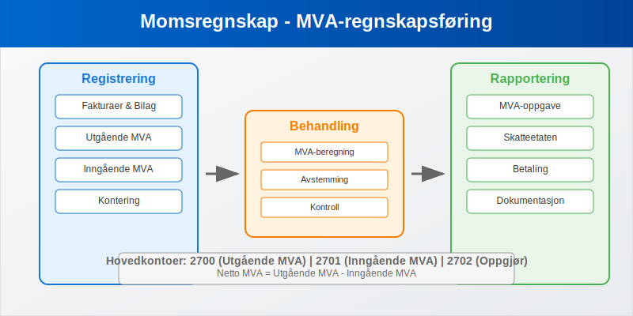
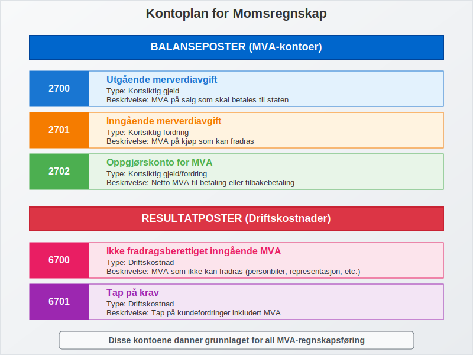
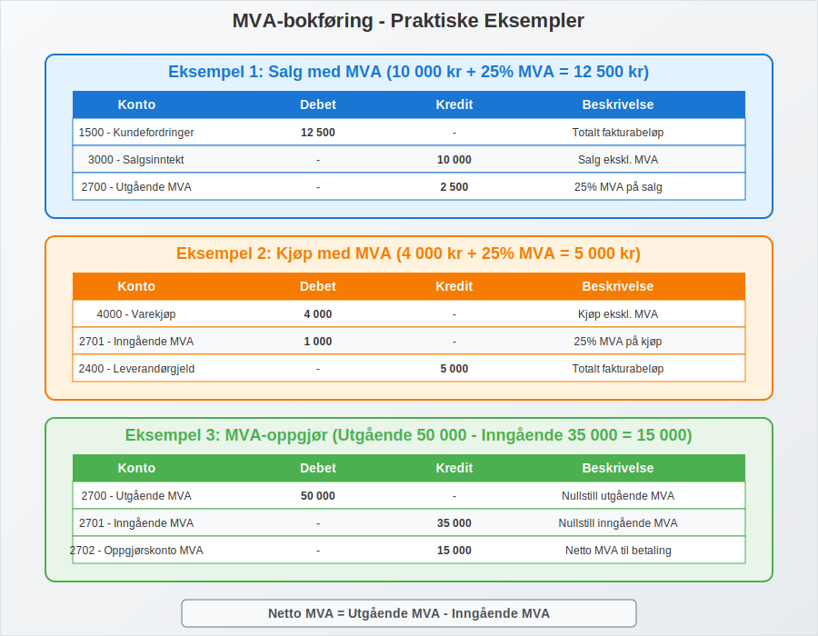
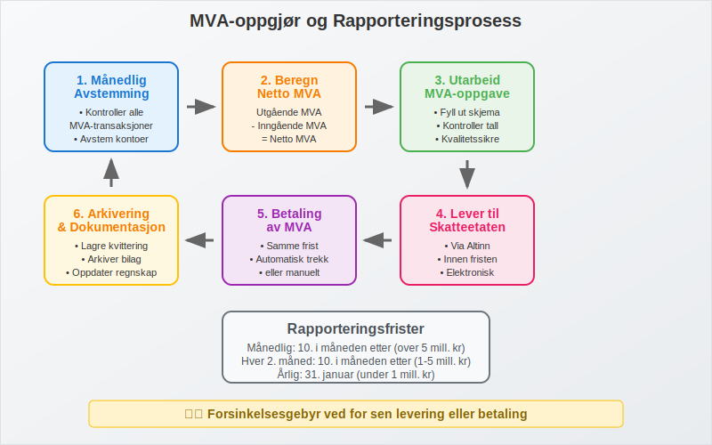
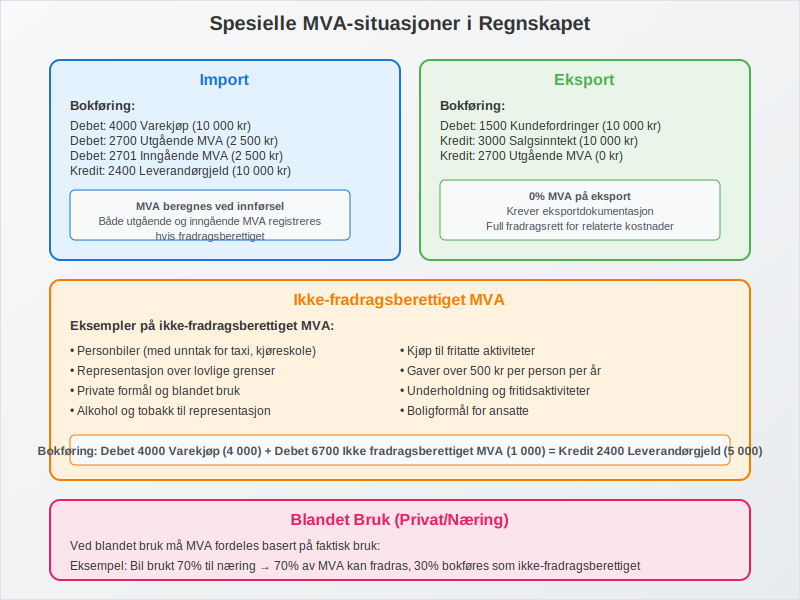
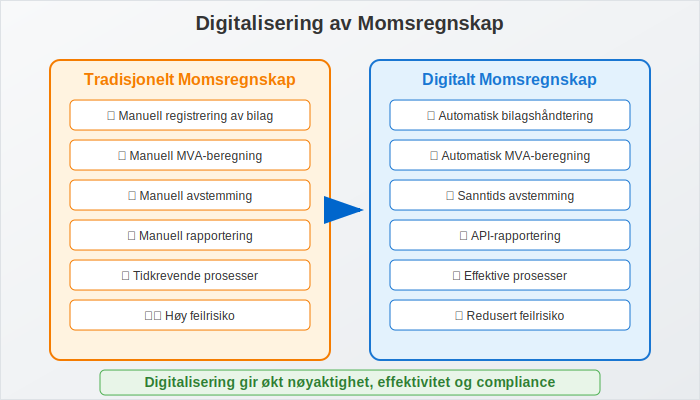
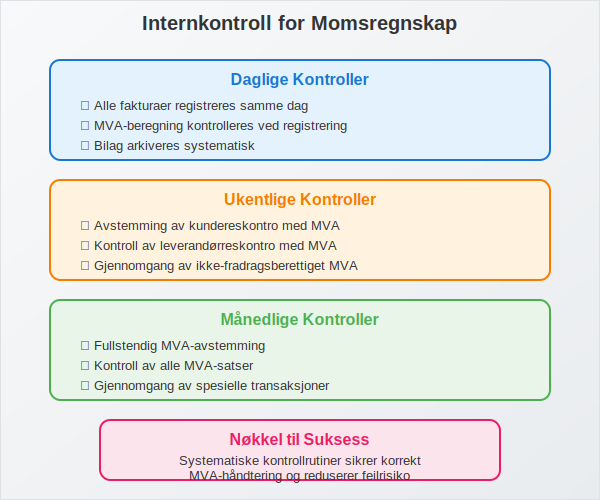
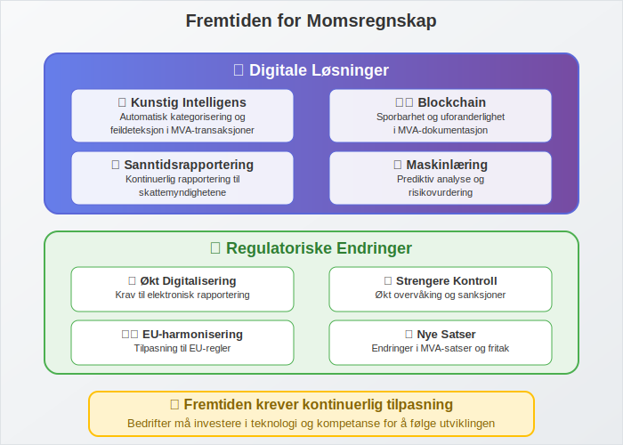

Momsregnskap er det systematiske arbeidet med å registrere, beregne og rapportere merverdiavgift (MVA) i bedriftens regnskap. Dette er en kritisk del av regnskapsføringen som krever nøyaktighet og forståelse av komplekse MVA-regler.
For en grundig innføring i Merverdiavgift, se vår detaljerte guide til MVA. For en omfattende gjennomgang av moms (MVA) i Norge, se Hva er Moms (MVA)?.

Hva er Momsregnskap?
Momsregnskap omfatter alle regnskapsrutiner knyttet til håndtering av merverdiavgift, inkludert:
- Registrering av alle MVA-transaksjoner
- Beregning av utgående og inngående MVA
- Rapportering til Skatteetaten
- Avstemming av MVA-kontoer
- Dokumentasjon av alle MVA-relaterte bilag
Momsregnskapet må følge bokføringsloven og god regnskapsskikk, og er underlagt avgiftsplikten som gjelder for de fleste bedrifter.

Kontoplan for Momsregnskap
Balanseposter (MVA-kontoer)
| Kontonummer | Kontonavn | Type | Beskrivelse |
|---|---|---|---|
| 2700 | Utgående merverdiavgift | Kortsiktig gjeld | MVA på salg som skal betales |
| 2701 | Inngående merverdiavgift | Kortsiktig fordring | MVA på kjøp som kan fradras |
| 2702 | Oppgjørskonto for MVA | Kortsiktig gjeld/fordring | Netto MVA til betaling/tilbakebetaling |
Resultatposter (Driftskostnader)
| Kontonummer | Kontonavn | Beskrivelse |
|---|---|---|
| 6700 | Ikke fradragsberettiget inngående MVA | MVA som ikke kan fradras |
| 6701 | Tap på krav | Tap på kundefordringer inkl. MVA |
| 6702 | MVA-korrigeringer | Justeringer og korrigeringer |

Bokføring av MVA-transaksjoner
Salg med MVA (Utgående MVA)
Eksempel: Salg for 10 000 kr + 25% MVA = 12 500 kr
| Konto | Debet | Kredit | Beskrivelse |
|---|---|---|---|
| 1500 - Kundefordringer | 12 500 | Totalt fakturabeløp | |
| 3000 - Salgsinntekt | 10 000 | Salg ekskl. MVA | |
| 2700 - Utgående MVA | 2 500 | 25% MVA på salg |
Kjøp med MVA (Inngående MVA)
Eksempel: Kjøp for 4 000 kr + 25% MVA = 5 000 kr
| Konto | Debet | Kredit | Beskrivelse |
|---|---|---|---|
| 4000 - Varekjøp | 4 000 | Kjøp ekskl. MVA | |
| 2701 - Inngående MVA | 1 000 | 25% MVA på kjøp | |
| 2400 - Leverandørgjeld | 5 000 | Totalt fakturabeløp |

MVA-oppgjør og Rapportering
Beregning av Netto MVA
Netto MVA = Utgående MVA - Inngående MVA
Eksempel på MVA-oppgjør:
| Beskrivelse | Beløp |
|---|---|
| Utgående MVA (salg) | 50 000 kr |
| Inngående MVA (kjøp) | 35 000 kr |
| Netto MVA til betaling | 15 000 kr |
Bokføring av MVA-oppgjør
Ved positivt oppgjør (betaling til staten):
| Konto | Debet | Kredit |
|---|---|---|
| 2700 - Utgående MVA | 50 000 | |
| 2701 - Inngående MVA | 35 000 | |
| 2702 - Oppgjørskonto MVA | 15 000 |
Ved betaling:
| Konto | Debet | Kredit |
|---|---|---|
| 2702 - Oppgjørskonto MVA | 15 000 | |
| 1900 - Bankinnskudd | 15 000 |

Rapporteringsperioder og Frister
Rapporteringsfrekvens
| Årlig omsetning | Rapporteringsperiode | Leveringsfrist |
|---|---|---|
| Under 1 mill. kr | Årlig | 31. januar |
| 1-5 mill. kr | Hver 2. måned | 10. i måneden etter |
| Over 5 mill. kr | Månedlig | 10. i måneden etter |
| Over 17 mill. kr | Månedlig | 10. i måneden etter |
Praktisk Rapporteringsrutine
- Månedlig avstemming av MVA-kontoer
- Kontroll av alle bilag og registreringer
- Utarbeidelse av MVA-oppgave
- Levering via Altinn eller regnskapssystem
- Betaling innen fristen
- Arkivering av dokumentasjon
Spesielle MVA-situasjoner i Regnskapet
Import og Eksport
Import:
- MVA beregnes ved innførsel
- Bokføres som både utgående og inngående MVA
- Krever spesiell dokumentasjon
Eksempel importbokføring:
| Konto | Debet | Kredit | Beskrivelse |
|---|---|---|---|
| 4000 - Varekjøp | 10 000 | Importerte varer | |
| 2700 - Utgående MVA | 2 500 | MVA ved import | |
| 2701 - Inngående MVA | 2 500 | Fradragsberettiget MVA | |
| 2400 - Leverandørgjeld | 10 000 | Skyldig leverandør |
Eksport:
- 0% MVA på eksport
- Krever eksportdokumentasjon
- Full fradragsrett for relaterte kostnader
Ikke-fradragsberettiget MVA
Visse kjøp gir ikke rett til MVA-fradrag:
- Personbiler (med unntak)
- Representasjon over grenser
- Private formål
- Fritatte aktiviteter
Bokføring av ikke-fradragsberettiget MVA:
| Konto | Debet | Kredit |
|---|---|---|
| 4000 - Varekjøp | 4 000 | |
| 6700 - Ikke fradragsberettiget MVA | 1 000 | |
| 2400 - Leverandørgjeld | 5 000 |

Kontroll og Avstemming
Månedlig MVA-avstemming
Kontrollpunkter:
- Balanse på MVA-kontoer stemmer med rapporterte tall
- Alle fakturaer er korrekt registrert
- MVA-satser er riktig anvendt
- Fradragsrett er korrekt vurdert
- Dokumentasjon er komplett
Årsavstemminger
- Sammenligning med MVA-oppgaver
- Kontroll av årsregnskap mot MVA-rapporter
- Justering av eventuelle avvik
- Dokumentasjon av alle korrigeringer
Digitalisering av Momsregnskap
ERP-systemer og Automatisering
Moderne ERP-systemer tilbyr:
- Automatisk MVA-beregning på alle transaksjoner
- Integrert rapportering til Skatteetaten
- Sanntids avstemming av MVA-kontoer
- Automatisk bilagshåndtering
API-integrasjon med Skatteetaten
- Direkte rapportering fra regnskapssystem
- Automatisk validering av MVA-oppgaver
- Redusert feilrisiko og administrativt arbeid
- Raskere behandling og tilbakemelding

Vanlige Feil i Momsregnskap
Typiske Feilkilder
- Feil MVA-sats på varer og tjenester
- Manglende registrering av inngående MVA
- Feil periodisering av MVA-transaksjoner
- Ukorrekt fradragsvurdering for blandede formål
- Manglende dokumentasjon for eksport/import
Konsekvenser av Feil
- Forsinkelsesgebyr ved for sen rapportering
- Tilleggsskatt ved feil i MVA-oppgaver
- Rentekostnader på for lite betalt MVA
- Revisjonsmerknader i årsregnskapet
Internkontroll for Momsregnskap
Kontrollrutiner
Daglige kontroller:
- Alle fakturaer registreres samme dag
- MVA-beregning kontrolleres ved registrering
- Bilag arkiveres systematisk
Ukentlige kontroller:
- Avstemming av kundereskontro med MVA
- Kontroll av leverandørreskontro med MVA
- Gjennomgang av ikke-fradragsberettiget MVA
Månedlige kontroller:
- Fullstendig MVA-avstemming
- Kontroll av alle MVA-satser
- Gjennomgang av spesielle transaksjoner

Revisjon og Momsregnskap
Revisorens Kontroll
Revisor vil typisk kontrollere:
- Korrekthet i MVA-beregninger
- Fullstendighet i registreringer
- Dokumentasjon av alle transaksjoner
- Samsvar mellom regnskap og MVA-oppgaver
- Internkontroll for MVA-håndtering
Revisjonshandlinger
- Analytisk gjennomgang av MVA-utviklingen
- Detaljkontroll av utvalgte transaksjoner
- Avstemming mot offentlige registre
- Kontroll av beregninger og satser
- Vurdering av regnskapsestimater
Fremtidige Utviklingstrekk
Digitale Løsninger
- Kunstig intelligens for automatisk kategorisering
- Maskinlæring for feildeteksjon
- Blockchain for sporbarhet og kontroll
- Sanntidsrapportering til myndighetene
Regulatoriske Endringer
- Økt digitalisering av rapporteringskrav
- Strengere kontroll og sanksjoner
- Harmonisering med EU-regler
- Nye MVA-satser og fritak

Praktiske Tips for Momsregnskap
Beste Praksis
- Implementer robuste rutiner for daglig registrering
- Bruk moderne regnskapssystemer med MVA-automatikk
- Utfør regelmessige avstemminger og kontroller
- Hold deg oppdatert på regelverksendringer
- Invester i kompetanse og opplæring
Ressurser og Verktøy
- Skatteetatens veiledere og rundskriv
- Regnskapsstandarder og tolkningsuttalelser
- Faglige nettverk og kursvirksomhet
- Digitale verktøy for beregning og kontroll
Når Søke Profesjonell Hjelp
Kontakt regnskapsfører eller revisor ved:
- Komplekse MVA-situasjoner
- Usikkerhet om regelverket
- Feil i tidligere rapportering
- Implementering av nye systemer
- Forberedelse til revisjon
Momsregnskap er en kritisk del av enhver bedrifts økonomistyring. Med riktige rutiner, systemer og kompetanse kan bedrifter sikre korrekt håndtering av MVA og unngå kostbare feil og sanksjoner.